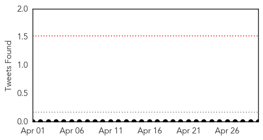
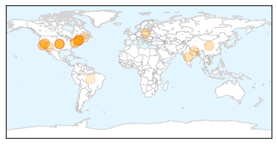
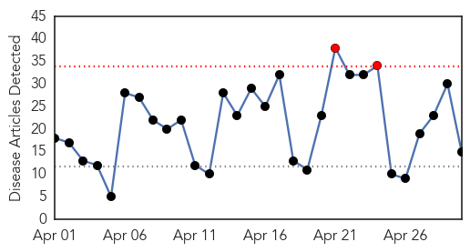
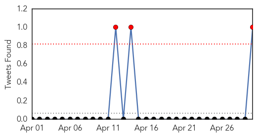

Measles
30-Day Web Trend
0 alerts, 0 warnings

30-Day Twitter Trend
0 alerts, 0 warnings

Article Locations
Article Confidences

Top Articles:
- 0.973
- Amid Concerns About Vaccine Adherence, Rubella Declared Eliminated
- 0.966
- Americas Become First Region To Eliminate Viral Infection
- 0.961
- One Vaccine Just Scored An Amazing Public Health Victory In Two Continents
- 0.960
- Rubella Has Been Eliminated From the Americas
- 0.945
- 2nd measles case confirmed in Spokane
- 0.943
- Measles warning for Parramatta and Pyrmont
- 0.921
- Harvard Trained Immunologist Demolishes California Legislation That Terminates Vaccine Exemptions
- 0.918
- News Releases
- 0.903
- Second case of measles confirmed in Spokane County
- 0.901
- Americas Are Rubella-Free, Declares World Health Organization (WHO). : World : Headlines & Global News
- 0.878
- North And South America Finally Eradicate Rubella
- 0.873
- Nepal earthquake could cause disease outbreak
- 0.873
- Head to Head: Should American River College adopt a mandatory vaccination policy?
- 0.808
- State investigating possible measles exposure in Portsmouth
- 0.806
- Portsmouth diners warned they may have been exposed to measles
- 0.802
- Confirmed measles case visits North Shore
- 0.802
- New Hampshire announces possible measles exposure at Portsmouth restaurant
- 0.800
- German measles eradicated from the Americas
- 0.787
- Sparring over the syringe
- 0.779
- German measles eradicated from Americas
- 0.754
- State health officials monitoring case of measles in international traveler who dined in Portsmouth
- 0.678
- NH Health Officials On the Lookout For Measles
- 0.666
- Student with measles visited Gloucester, NH, Maine
- 0.603
- Rubella Wiped Out in Americas
- 0.575
- Second person diagsnosed with measles in Spokane
Top Tweets:
-
No tweets found for Apr 30, 2015
Influenza
30-Day Web Trend
2 alerts, 0 warnings

30-Day Twitter Trend
3 alerts, 0 warnings

Article Locations

Article Confidences

Top Articles:
- 0.993
- Southern DHB asking staff not to get or give the flu
- 0.930
- Animal facilities on high alert after Iowa dog flu case
- 0.926
- Māori fight back against influenza « LiveNews.co.nz
- 0.920
- Asthma Foundation Urge Everyone To Get A Flu Vaccine
- 0.869
- Dog flu could make its way to South Dakota
- 0.848
- Poultry producers should step up biosecurity
- 0.817
- Lawmakers urge USDA to tap into other resources to fight bird flu
- 0.751
- April 29, 2015 Archives
- 0.719
- ‘Benefits of immunization outweigh risk’
- 0.712
- Barron County officials address avian influenza concerns
- 0.685
- Colorado bird owners urged: Protect your poultry
- 0.676
- Rembrandt Foods egg farm could be largest hit by bird flu
- 0.586
- Lawmakers Urge USDA To Tap Into Other Resources To Fight Bird Flu
- 0.570
- PETA looks to erect bird flu billboard in Sioux City
- 0.501
- County declares State of Emergency over bird flu
Top Tweets:
- 0.556
- Update on H3N2 Canine Influenza (Dog Flu) Virus http://t.co/FxcbYRzPVS